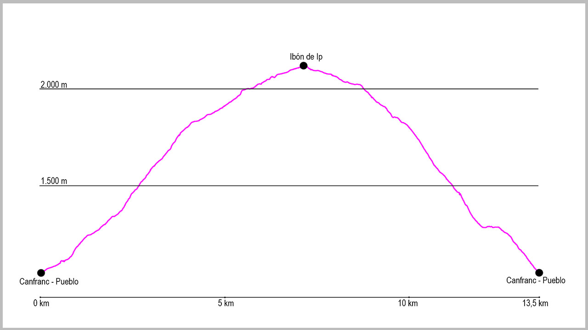

Tomaremos la salida de la ruta en el puente de arriba de Canfranc-Pueblo. Aquí cogeremos la pista que sale del aparcamiento y la seguiremos de manera ascendente, obviando un primer cruce a nuestra derecha y un segundo a nuestra izquierda, hasta que pasemos el puente sobre el barranco de Ip y finalice. Aquí cogeremos el camino que nos conducirá hasta el Ibón de Ip.
El sendero balizado transcurre por una antigua “tiradera” de leña, aunque siempre podemos coger el antiguo camino que nos subirá más cómodamente haciendo varias “zetas”. Poco a poco vamos cogiendo altura por dentro del bosque, donde cruzaremos varias canales de aludes de nieve, pero sin ninguna dificultad.
Cuando llegamos al final del bosque y ya podamos ver todo el circo de Ip, cruzaremos la canal del Obispo, para entonces continuar ya nuestro camino con casi todo el desnivel ganado anteriormente. Pasaremos desde este punto una antigua paridera para el ganado e iremos entrando en el valle.
Justo antes de llegar al Ibón el sendero pasa a la izquierda de un edificio blanco. Nosotros seguiremos rectos y por la derecha del edificio para llegar a una antigua pista. La cogeremos girando a nuestra izquierda y seguiremos en todo el rato en dirección este. Pasando a la izquierda del refugio de Ip, esta nos llevará a la parte superior del dique de la presa.
Para que la ruta sea circular, cruzaremos por encima de la presa, y cuando lleguemos al final de ella giraremos a nuestra derecha, descendiendo por el mismo talud. En este momento cogeremos un antiguo camino de las obras de construcción que nos conducirá hasta otros edificios blancos, donde entre la roca y a nuestra izquierda veremos que sale un tubo negro, lugar donde podremos coger agua para la bajada.
Desde este punto empieza la bajada, donde podemos seguir en todo momento las marcas de PR blancas y amarillas. Al principio prácticamente plana, atravesaremos una zona con bastantes bloques de piedra que han caído de la montaña, para después empezar la verdadera bajada.
Enseguida entraremos al bosque, momento en el cual la traza del sendero está mucho más marcada. La seguiremos desde este punto hasta el final de ruta, nuestro punto de partida, sin ningún problema, siempre de manera descendente y hacia el oeste hasta llegar al puente inicial.
